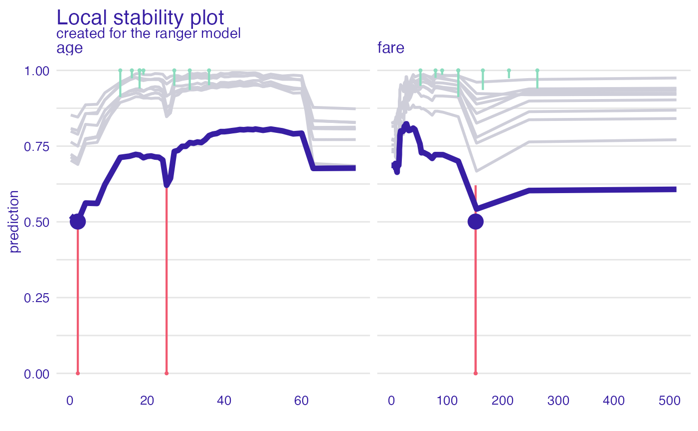
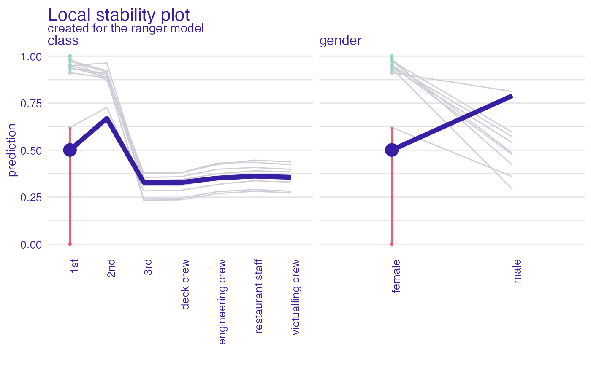
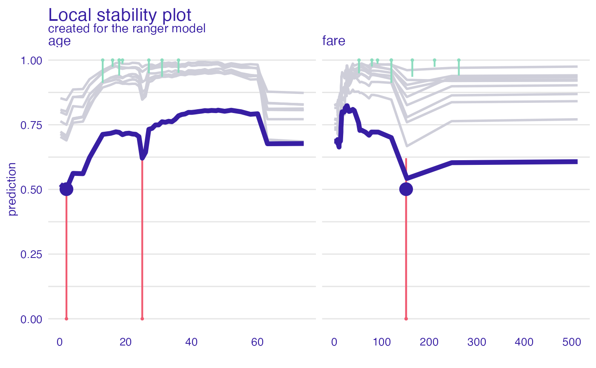
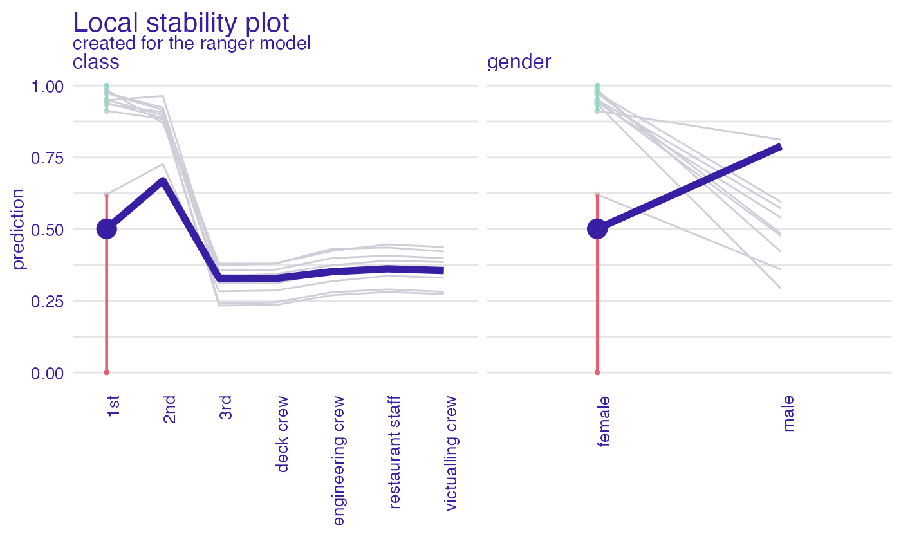

This function performs local diagnostic of residuals. For a single instance its neighbors are identified in the validation data. Residuals are calculated for neighbors and plotted against residuals for all data. Find information how to use this function here: https://ema.drwhy.ai/localDiagnostics.html.
predict_diagnostics(
explainer,
new_observation,
variables = NULL,
...,
nbins = 20,
neighbors = 50,
distance = gower::gower_dist
)
individual_diagnostics(
explainer,
new_observation,
variables = NULL,
...,
nbins = 20,
neighbors = 50,
distance = gower::gower_dist
)Arguments
- explainer
a model to be explained, preprocessed by the 'explain' function
- new_observation
a new observation for which predictions need to be explained
- variables
character - name of variables to be explained
- ...
other parameters
- nbins
number of bins for the histogram. By default 20
- neighbors
number of neighbors for histogram. By default 50.
- distance
the distance function, by default the
gower_dist()function.
Value
An object of the class 'predict_diagnostics'. It's a data frame with calculated distribution of residuals.
References
Explanatory Model Analysis. Explore, Explain, and Examine Predictive Models. https://ema.drwhy.ai/
Examples
# \donttest{
library("ranger")
titanic_glm_model <- ranger(survived ~ gender + age + class + fare + sibsp + parch,
data = titanic_imputed)
explainer_glm <- explain(titanic_glm_model,
data = titanic_imputed,
y = titanic_imputed$survived)
#> Preparation of a new explainer is initiated
#> -> model label : ranger ( default )
#> -> data : 2207 rows 8 cols
#> -> target variable : 2207 values
#> -> predict function : yhat.ranger will be used ( default )
#> -> predicted values : No value for predict function target column. ( default )
#> -> model_info : package ranger , ver. 0.13.1 , task regression ( default )
#> -> predicted values : numerical, min = 0.006168925 , mean = 0.3225983 , max = 0.9963192
#> -> residual function : difference between y and yhat ( default )
#> -> residuals : numerical, min = -0.7809362 , mean = -0.0004414901 , max = 0.8699308
#> A new explainer has been created!
johny_d <- titanic_imputed[24, c("gender", "age", "class", "fare", "sibsp", "parch")]
id_johny <- predict_diagnostics(explainer_glm, johny_d, variables = NULL)
#> Warning: p-value will be approximate in the presence of ties
id_johny
#>
#> Two-sample Kolmogorov-Smirnov test
#>
#> data: residuals_other and residuals_sel
#> D = 0.65263, p-value < 2.2e-16
#> alternative hypothesis: two-sided
#>
plot(id_johny)
 id_johny <- predict_diagnostics(explainer_glm, johny_d,
neighbors = 10,
variables = c("age", "fare"))
id_johny
#> Top profiles :
#> gender age class fare sibsp parch _yhat_ _vname_ _ids_ _label_
#> 24 female 0.1666667 1st 151.16 1 2 0.4635686 age 24 ranger
#> 24.1 female 2.0000000 1st 151.16 1 2 0.4504353 age 24 ranger
#> 24.2 female 4.0000000 1st 151.16 1 2 0.5243264 age 24 ranger
#> 24.3 female 7.0000000 1st 151.16 1 2 0.5239264 age 24 ranger
#> 24.4 female 9.0000000 1st 151.16 1 2 0.5918842 age 24 ranger
#> 24.5 female 13.0000000 1st 151.16 1 2 0.6869203 age 24 ranger
#>
#>
#> Top observations:
#> gender age class fare sibsp parch _yhat_ _label_ _ids_
#> 24 female 2 1st 151.16 1 2 0.4504353 ranger 1
plot(id_johny)

id_johny <- predict_diagnostics(explainer_glm,
johny_d,
neighbors = 10,
variables = c("class", "gender"))
id_johny
#> Top profiles :
#> gender age class fare sibsp parch _yhat_ _vname_ _ids_
#> 24 female 2 1st 151.16 1 2 0.4504353 class 24
#> 24.1 female 2 2nd 151.16 1 2 0.6353043 class 24
#> 24.2 female 2 3rd 151.16 1 2 0.3296360 class 24
#> 24.3 female 2 deck crew 151.16 1 2 0.3364803 class 24
#> 24.4 female 2 engineering crew 151.16 1 2 0.3779192 class 24
#> 24.5 female 2 restaurant staff 151.16 1 2 0.3853617 class 24
#> _label_
#> 24 ranger
#> 24.1 ranger
#> 24.2 ranger
#> 24.3 ranger
#> 24.4 ranger
#> 24.5 ranger
#>
#>
#> Top observations:
#> gender age class fare sibsp parch _yhat_ _label_ _ids_
#> 24 female 2 1st 151.16 1 2 0.4504353 ranger 1
plot(id_johny)
#> 'variable_type' changed to 'categorical' due to lack of numerical variables.
#> 'variable_type' changed to 'categorical' due to lack of numerical variables.

# }
id_johny <- predict_diagnostics(explainer_glm, johny_d,
neighbors = 10,
variables = c("age", "fare"))
id_johny
#> Top profiles :
#> gender age class fare sibsp parch _yhat_ _vname_ _ids_ _label_
#> 24 female 0.1666667 1st 151.16 1 2 0.4635686 age 24 ranger
#> 24.1 female 2.0000000 1st 151.16 1 2 0.4504353 age 24 ranger
#> 24.2 female 4.0000000 1st 151.16 1 2 0.5243264 age 24 ranger
#> 24.3 female 7.0000000 1st 151.16 1 2 0.5239264 age 24 ranger
#> 24.4 female 9.0000000 1st 151.16 1 2 0.5918842 age 24 ranger
#> 24.5 female 13.0000000 1st 151.16 1 2 0.6869203 age 24 ranger
#>
#>
#> Top observations:
#> gender age class fare sibsp parch _yhat_ _label_ _ids_
#> 24 female 2 1st 151.16 1 2 0.4504353 ranger 1
plot(id_johny)

id_johny <- predict_diagnostics(explainer_glm,
johny_d,
neighbors = 10,
variables = c("class", "gender"))
id_johny
#> Top profiles :
#> gender age class fare sibsp parch _yhat_ _vname_ _ids_
#> 24 female 2 1st 151.16 1 2 0.4504353 class 24
#> 24.1 female 2 2nd 151.16 1 2 0.6353043 class 24
#> 24.2 female 2 3rd 151.16 1 2 0.3296360 class 24
#> 24.3 female 2 deck crew 151.16 1 2 0.3364803 class 24
#> 24.4 female 2 engineering crew 151.16 1 2 0.3779192 class 24
#> 24.5 female 2 restaurant staff 151.16 1 2 0.3853617 class 24
#> _label_
#> 24 ranger
#> 24.1 ranger
#> 24.2 ranger
#> 24.3 ranger
#> 24.4 ranger
#> 24.5 ranger
#>
#>
#> Top observations:
#> gender age class fare sibsp parch _yhat_ _label_ _ids_
#> 24 female 2 1st 151.16 1 2 0.4504353 ranger 1
plot(id_johny)
#> 'variable_type' changed to 'categorical' due to lack of numerical variables.
#> 'variable_type' changed to 'categorical' due to lack of numerical variables.

# }